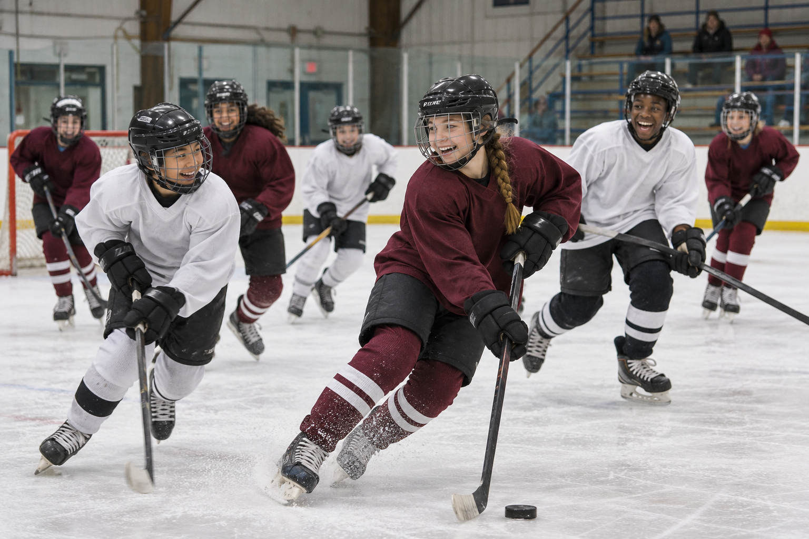
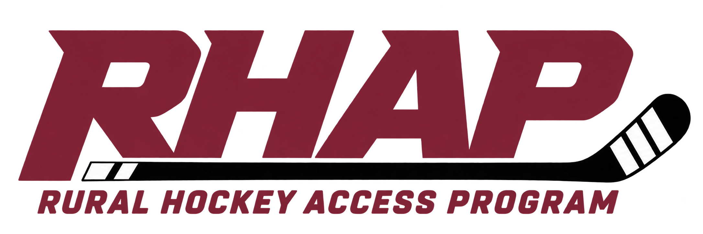
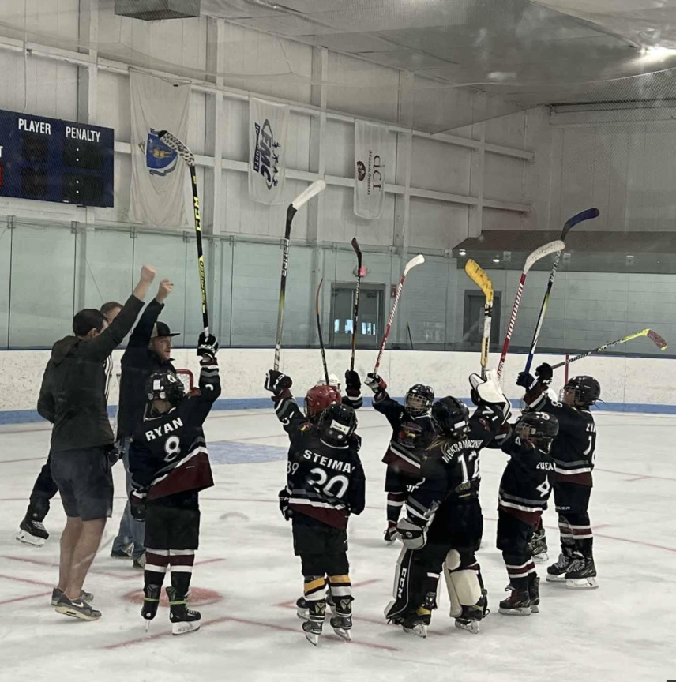
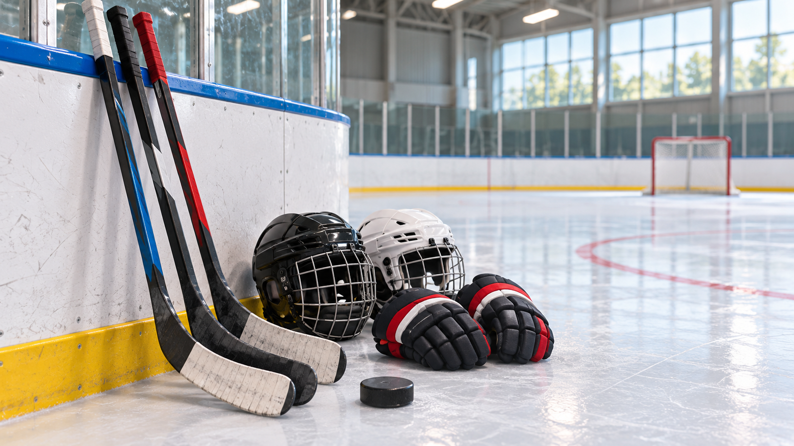
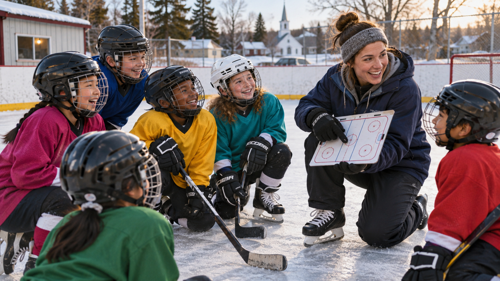
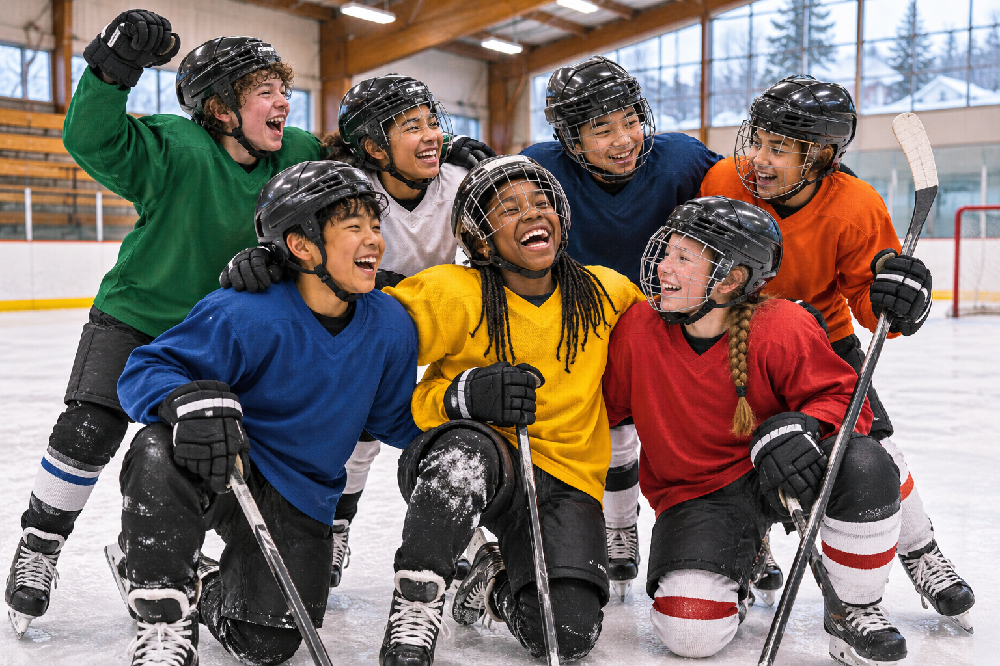
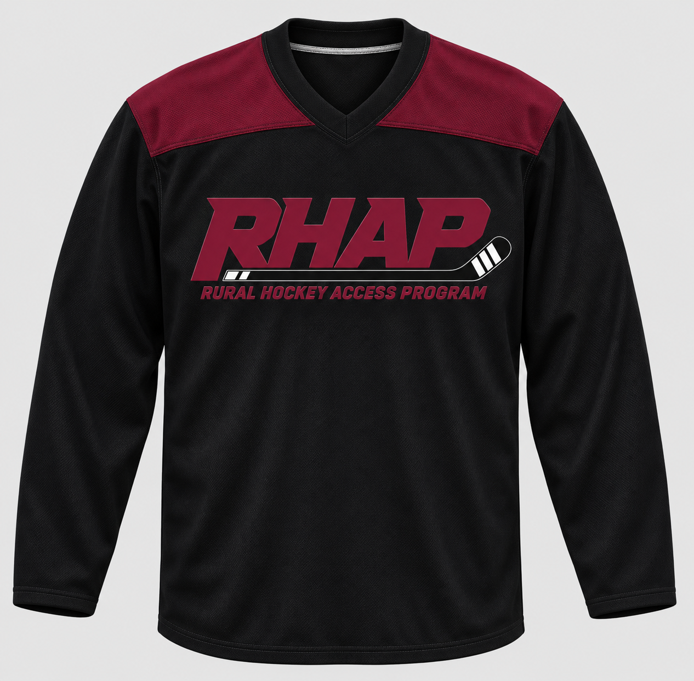
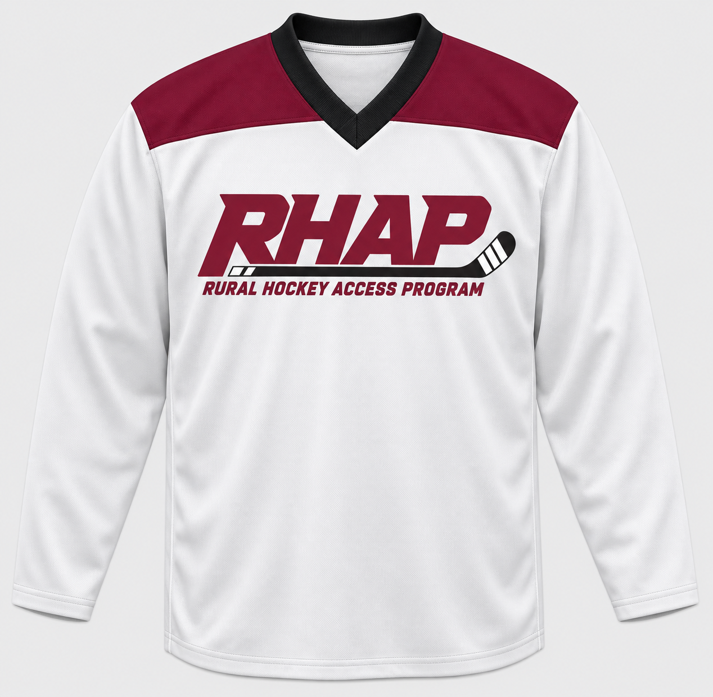
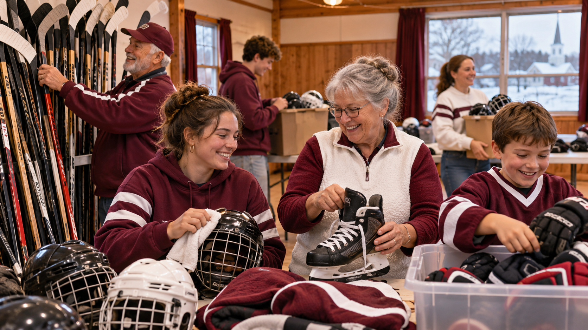

01 / ON THE ICE
Ice Hockey
Affordable rink time, practices, games, and skill development with volunteer coaches. The core of our proposed program.

Making ice hockey more accessible, affordable, and connected to the communities we call home.
RHAP is a proposed program currently in the planning stage.For too many families in rural Tennessee, the opportunity to play hockey is out of reach.
Long drives to rinks, expensive equipment, and limited local programs can keep kids off the ice. RHAP is a proposed community-powered program designed to change that — helping young players develop skills, friendships, and confidence.

Designed for boys and girls ages 5–16, from first-time skaters to growing players.

Affordable rink time, practices, games, and skill development with volunteer coaches. The core of our proposed program.

Proposed equipment loans, donations, and sponsorships to help families access essential hockey gear.

Teamwork, friendships, exercise, and community involvement. Ball hockey may be offered as an additional option.
Financial barriers shouldn't decide who gets to play. These are proposed registration options, subject to funding and launch plans.
These are goals for the future, not results already achieved.
Youth hockey moments that inspire RHAP. These images illustrate the proposed program, not actual RHAP events.

Black and white RHAP practice jersey concepts from the original presentation. Designs are proposed and not currently available to purchase.


RHAP hopes to work with local rinks, schools, recreation departments, businesses, and volunteers to create more opportunities for young athletes.
Connect With RHAP ↗
Interested in participating, coaching, volunteering, or supporting the proposed program? Reach out to the RHAP project team when official contact details become available.